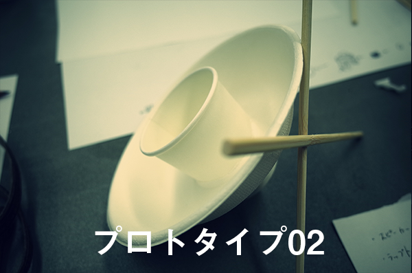
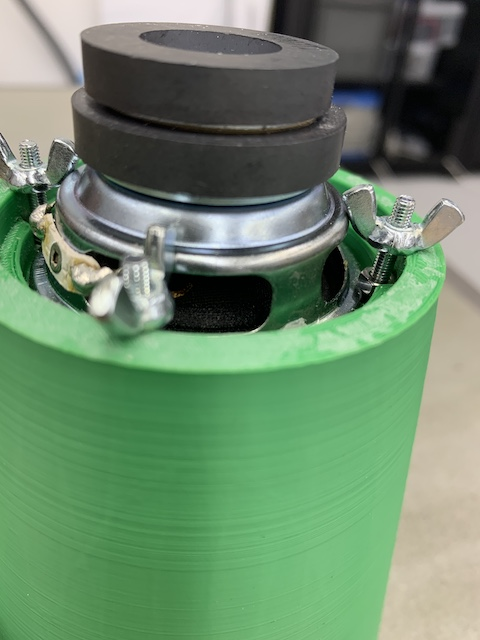
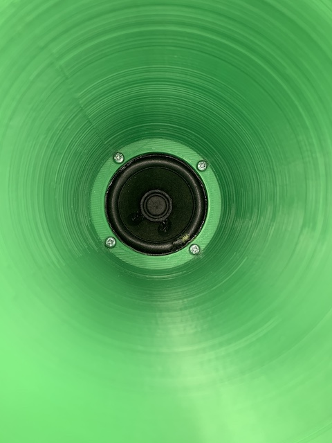

デスク上に置くスピーカー
スマートフォンの音を拡張するタイプのスピーカー
スピーカーユニットをつけることで通常のスピーカーとしても使えるものを目指す。
作業進捗
4/12 スピーカーのイメージ（丸い感じ）から、紙コップを斜めに置いて卓上スピーカっぽくしてみた。

これだとスピーカーのイメージが湧きにくいので紙皿の中央に穴を開けて紙コップを刺してみた。
その状態では回転していくので割り箸で足をつけた。これによって少しスピーカーっぽくなった。

4/15 スピーカーに様々な変更を加えてアレンジする前に、ベーシックなスピーカーを作ってみようと思い、イメージを描いてみる。

ちょっと変形を加えてみたのとかも考えてみたけど結局めっちゃシンプルな形のものを作ることにした。

4/16 コールドモックアップを作るために昨日書いた図面をもとにダンボールからパーツを切り出していく。
図面上では120（W）x170（L）x200（H）mmを想定していたが、音を響かせるための空気室が足りなかったので高さを250（H）mmに拡張した。
正面にフルレンジのスピーカーを１つ、低音用のダクトを下の方に。
底面には傾斜をつけてバックロードホーン型のスピーカーと同じような効果を
Q & A
Q：スマホの音を拡張するスピーカー？
A：パソコンに接続するタイプを想定してたけど、簡単に組み替えれたら良さそう。
Q：機能はスピーカーだけ？
A：もともとはスピーカーの配置位置をパソコンデスク上と想定していたので前面にUSBハブを設置しようと思っていた。
実際にスピーカーを作る
スピーカーを作る素材をどうするか。 MDFかプラスチックか ボックスの大きさはどうするか。 模型とほぼ同サイズ ユニット径はどうするか。 今回分解したユニットを流用、または10cmの自作キットユニットを使用。（その場合はボックスが大きくなる）
アイデア
ユニットとボックスをつなげるための円形のパーツを3Dプリンターで出力して身近あるものがスピーカーになるキットのようなものを製作するのはどうか ユニットのサイズ的になんか色々できそう。空き瓶とか、空き缶とか、バケツとかも行けそうな感じがする。一斗缶とかも四角だけど行けそう。それだとペール缶の方が丸出しいいのかな？でもスピーカーボックスは四角か……。
普通のスピーカー作るのは面白くない
机の上に置くとかさばるし、普通の作っても仕方がないじゃん
実際にスピーカーのエンクロージャー（箱）を製作しようと考えたときにふと思った。机の上にあるとかさばることを懸念していたはずなのになぜ普通のスピーカーを作ろうとしているのかと。そうしてスタンドライトのようなスピーカーを作ることにした。
身近なもので試作
まずはイメージをそのまま形にしようと思い家にあったスタンドライトを解体して組み込んだ。

レビュー時のプロトタイプとメモ
このレビュー時には、フロントロードホーン型のスピーカーの存在を知り、完成品のマテリアルを思考していました。
当時は木材を使用してホーンを製造する予定でしたが、製作のめどが立たなかったため断念。
Rhinocerosで描いた3DデータをSlicerForFusion360でスライスし、そのデータをIllustratorで無駄が出ないように並べた画像。
レーザーカッターでくり抜くことを想定して製作したが、使うことはなかった。悲しい。

3Dプリンターでホーンを出力するためにデータ作り。まだまだ慣れてないのでこねくり回してトライアンドエラー。
手持ちのスピーカーユニットには固定できる穴がないので固定具を作成してみるもサイズが微妙に合わない。
できたホーンのデータを出力。10時間。結構綺麗に仕上がって嬉しいけどこれも寸法がほんの少しだけ狭かったのでペンチ等で無理やり拡張してねじ込んだ。


そしてちゃんと音も鳴った！やった！指向性スピーカーになった。が、ユニットがジャンクなのでかなりノイズが走っていて残念。どうしたものか。
このスピーカーを完成させるためには、新品のスピーカーユニットを購入し、その形状と寸法にあったホーンを製作しなければならない。
時間もないが何より資金がない。詰み。